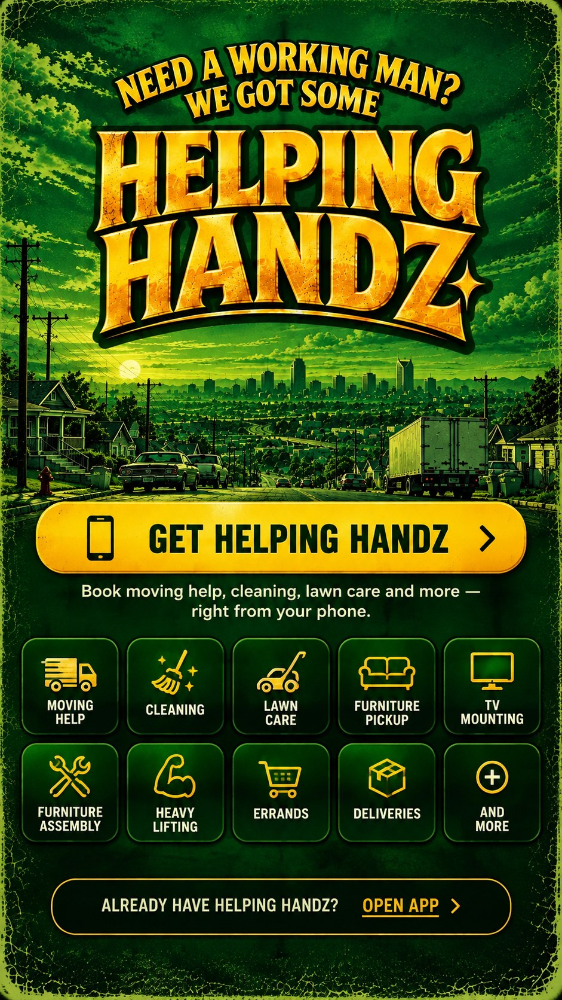

Get Helping Handz on iPhone
1. Open this page in Safari.
2. Tap the Share button.
3. Choose Add to Home Screen.
4. Tap Add.
1. Open this page in Safari.
2. Tap the Share button.
3. Choose Add to Home Screen.
4. Tap Add.
Get Helping Handz on Android
If your phone doesn't show the app prompt, open your browser menu and choose Add to Home screen or Install app.
If your phone doesn't show the app prompt, open your browser menu and choose Add to Home screen or Install app.
Moving Help • Cleaning • Lawn Care • Furniture Pickup • TV Mounting • Furniture Assembly • Heavy Lifting • Errands • Deliveries • And More
Quick access to Helping Handz booking and services, right from your phone.